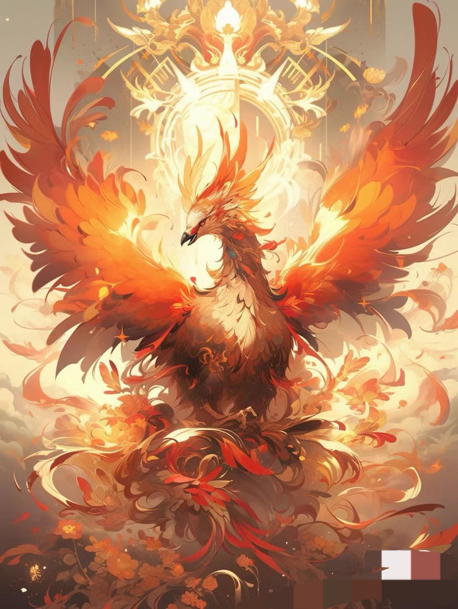

每一只妖怪可能是每个人内心世界隐秘的角落
“不甘 不愿 不敢”
狐妖
山魈
龙
姑获鸟
山魈
龙
姑获鸟
因为它们，我们才得以聆听千百年前的嬉笑怒骂
或许，他还在等待人类，重拾我们曾经的友谊
中国人永恒的精神象征
善与恶 双面皆是姑获鸟
或许，他还在等待人类，重拾我们曾经的友谊
中国人永恒的精神象征
善与恶 双面皆是姑获鸟
蛇妖
无支祁
无支祁
从情色代言到真爱象征
比起顺从，人更想要掌握自己的命运
比起顺从，人更想要掌握自己的命运
山海同行，生生不息
“地之所载 六合之间 四海之内 照之以日月”
凤凰|诸夭之野
"开明西有凤皇、鸾鸟，皆戴蛇践蛇，膺有赤蛇。——《山海经•海内西经》"
"开明西有凤皇、鸾鸟，皆戴蛇践蛇，膺有赤蛇。——《山海经•海内西经》"

毕方|其鸣自叫也，见则其邑有讹火
"有乌焉，其状如鹤，一足，赤文青质而白嚎，名日毕方，其鸣自叫也，见则其邑有讹火。一《山海经•西山经》"
"有乌焉，其状如鹤，一足，赤文青质而白嚎，名日毕方，其鸣自叫也，见则其邑有讹火。一《山海经•西山经》"
九尾狐|状如狐而九尾，其音如婴儿
“青丘国在其北，其狐四足九尾。 一日在朝阳北。——《山海经•海外东经》”
“青丘国在其北，其狐四足九尾。 一日在朝阳北。——《山海经•海外东经》”
白泽|通万物之情，晓天下万物状貌
“东望山有兽，名日白泽，能言语，王者有德，明照幽远则至。 ——《山海经•南山经》”
“东望山有兽，名日白泽，能言语，王者有德，明照幽远则至。 ——《山海经•南山经》”
饕餮 |状如羊身人面，其目在腋下，虎齿人爪
“有兽焉，其状如羊身人面，其目在腋下，虎齿人爪，其音如婴儿，名曰狍鸦，是食人。一《山海经•北山经》”
“有兽焉，其状如羊身人面，其目在腋下，虎齿人爪，其音如婴儿，名曰狍鸦，是食人。一《山海经•北山经》”
天狗|状如狸而白首
“浊浴之水出焉，而南流于番泽。其中多文贝，有兽焉，日天狗，其状如狸而白首，其音如榴榴，可以御凶。—一《山海经•西山经》”
“浊浴之水出焉，而南流于番泽。其中多文贝，有兽焉，日天狗，其状如狸而白首，其音如榴榴，可以御凶。—一《山海经•西山经》”
夔|其光如日
月，其声如雷
“东海中有流波山，入海七千里。其上有兽，状如牛，苍身而无角，一足，出入水则必风雨，其光如日月，其声如雷，其名曰夔。黄帝得之，以其皮为鼓，橛以雷兽之骨，声闻五百里，以威天下。——《山海经•大荒东经》”
“东海中有流波山，入海七千里。其上有兽，状如牛，苍身而无角，一足，出入水则必风雨，其光如日月，其声如雷，其名曰夔。黄帝得之，以其皮为鼓，橛以雷兽之骨，声闻五百里，以威天下。——《山海经•大荒东经》”
鹿蜀|状如马而白首，其文如虎
而赤尾
"杻阳之山，有兽焉，其状如马而白首，其文如虎而赤尾，其音如谣，其名曰鹿蜀，佩之宜子孙。——《山海经• 南山经》"
"杻阳之山，有兽焉，其状如马而白首，其文如虎而赤尾，其音如谣，其名曰鹿蜀，佩之宜子孙。——《山海经• 南山经》"
“山海有经，古木有灵”